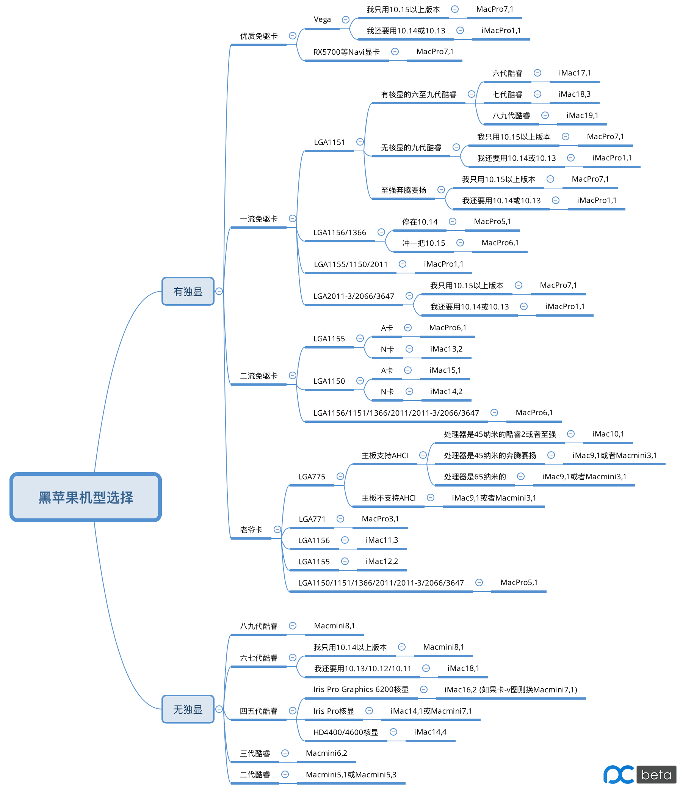

自用备查，转自aishaoquan
要装好一台黑苹果，机型选择是必不可少的一环。但是，目前网上关于机型选择一方面的文章甚少，初学者很难参考；而且，还有大量的黑苹果使用了不佳的机型，导致硬件的能力（本文说的“能力”，不是简单指跑分，二是更多指硬件的特色）未能得到充分发挥。笔者通过大量黑苹果的经验（把从LGA775到LGA1151各代的都黑了个遍），精心总结了这篇文章，以供各位新手参考。
考虑到10.15.2砍掉了RX400/500显卡的HEVC无核显硬解功能（可通过添加WhateverGreen.kext补回来），所以我把RX400/500称为“一流免驱卡”，放在比Vega/RX5700（称为“优质免驱卡”）低一档的位置。
温馨提示：新版WhateverGreen.kext可以补回10.15.2开始被砍掉的HEVC无核显硬解功能！换句话说，“一流免驱卡”配合WhateverGreen.kext，也可以当作“优质免驱卡”使用！
选MacPro7,1机型的，如果用Clover引导，并且不想看到内存报错提示，可以参考这贴的解决方案：http://bbs.pcbeta.com/viewthread-1843328-1-1.html
本文作为一篇“低级”文章，定位：
（1）让新手、小白，或者不爱折腾以省心为主的用户，能够更快更准地选择适合自己的黑苹果机型。
（2）以本文为跳板，为更进一步的折腾、看更高一级别的文章作准备。
（3）当进一步折腾遇到困难时，作为一个暂停折腾回归稳定的避风港。
黑苹果需求层次：
（1）安装系统，进入桌面的需要。
（2）稳定工作的需要（连续一星期不关机的情况下，不冻屏，不死机，不自动重启，稳定性不下降）。
（3）三卡（显卡、声卡、网卡）驱动的需要。
（4）完美睡眠唤醒和电能小憩的需要。
（5）干重活、做大事的需要。这里面会有多个分支（如：以黑苹果作为折腾工具，尽可能容易升级系统的方向；用黑苹果做吃饭工具，尽可能压榨硬件性能的方向）
如何理解这一需求层次？很简单，就是“低层次的需求满足不了，高层次的需求就是扯蛋”：
（1）如果没法安装系统，或者装好系统进不去桌面，那就等于零。
（2）如果不能稳定工作，那就只能呵呵了。
（3）如果三卡无法驱动（尤其是显卡），那按照普通的电脑使用方法用起来就非常不舒服了，除非“妙用”（且看下文）。
（4）如果不能完美睡眠唤醒和电能小憩，那么只能像Windows电脑那样用完即关机，体会不到白果那种“用完即合盖或睡眠，两个月不关机不重启也没事”的魅力。
譬如，百把块钱一张的1037U小主板，核显是Ivy Bridge GT1，无解，表现为一驱动就黑屏只有鼠标能动。（别说了，我买了两张1037U小主板，核显都是这样的，而且这么小的主板没法加独显）这样的主板，显然无法做主流使用。
但是，由于不驱动显卡时可以稳定使用，所以可以进行这样一番“神”操作：
一间大办公室，十来台电脑，只有一台公用打印机，所有电脑都用的是黑果，主要用于PS和微信公众号推送。刚好办公室缺少一台挂钟，于是负责人用一块1037U小主板和一台显示器，DIY了一台黑苹果，三卡只驱动网卡，连接办公室局域网，并将公共打印机连接上，打开局域网共享，然后给系统里安装几个时钟的屏保，设置屏保1分钟自动打开。然后挂在墙上，当“挂钟”。
于是，神奇的效果出现了：所有人使用打印机都可以直接给这台“挂钟”发送打印信息，不用担心办公室里原来连着打印机的员工电脑出现状况；“挂钟”每天自动与Apple服务器对时，所以不存在“钟慢了”或者“钟快了”；今后这台“挂钟”还可以跑一些后台……潜力无限。
====================================
本文旨在为满足你的最基础需求而助一臂之力（三卡轻松驱动起来，并且系统稳定运行），并尽力满足一点点你的高级需求。
如上所说，人的需求是有层次的，先满足了低层次的需求才能满足高层次的需求。“饱汉不知饿汉饥”，跟还在三卡驱动层面挣扎的用户谈什么FCPX，谈什么HWP，谈什么注入这个修改那个的，是没有意义的。诚然，FCPX有用，HWP也有用，但是这应当是你满足了低层次的需求，而为高层次需求奋斗时所作出的，应该是另一篇文章的内容。当你为下一个目标奋斗，读更高级的文章时，可能发现为了实现更高级的需求需要换另一种机型，这时也不必守着本文所讲的机型不放；但是也不能因为更高级的文章就否定低级的文章，更不能因为更高层次的需求就否定低层次的需求。正如：初中阶段化学方程式的配平一般用最小公倍数法就可以做到；高中阶段由于方程式变复杂了，就需要用氧化值（化合价）法；大学阶段由于很多方程式连次要产物都没写出来，不仅要配平还要自己补齐次要产物，则用离子-电子法，把反应设计成原电池，通过配平两个半反应来得到配平后的总反应。对一个初中生而言，知道在橙子里插一块铜片一块锌片能组成“水果电池”就已经非常了不起了，你还指望让他设计原电池（其实对高中生而言设计原电池也是一大难点）？更高级的方法是为了弥补低级方法的不足；但是不先满足低层次需求，高层次需求就是扯蛋。看不惯请点右上角。
适宜人群：
（1）黑苹果新用户；
（2）黑苹果普通用户；
（3）喜欢玩Beta版系统的用户；
（4）不爱折腾，以省心为主的用户。
不适宜人群：
（1）妄想一口吃成胖子的，或者吃成胖子后说 “原来让我变成胖子靠的全是最后一口饭的功劳啊！早知如此劳资就只吃最后这口饭了！” 的；
（2）玻璃心的、被害妄想症的；
（3）强迫症晚期的；
（4）鸡蛋里挑骨头的、想要一条龙服务的。
机型的作用：让硬件和谐高效地协同工作；限制系统版本区间（如：MacPro7,1机型只能运行10.15或更高版本，用了这一机型则无法运行10.14.6或更低版本；Macmini3,1机型官方最高只能运行10.11.6，更高版本需要破解）。
机型选择的基本原则：优先从显卡出发，兼顾CPU，尽可能多向白果靠拢，充分考虑各硬件的能力与各机型的脾气。
首先是“太长不看版”——思维导图先来一张：

下面正文要开始了。
定义：
（1）显卡可以驱动：不开启辅助功能“增强对比度”时，（如果是Mojave或Catalina，要求是亮色模式下）可以使右键菜单、顶部菜单栏、空格预览窗口透明，程序坞透明。
（2）显卡无驱动：不开启辅助功能“增强对比度”时，（如果是Mojave或Catalina，要求是亮色模式下）右键菜单、顶部菜单栏、空格预览窗口一片惨白，程序坞一片惨白，运行起来非常卡顿。
（3）显卡经过Patch可以驱动：在Mojave或Catalina的亮色模式下，用Mojave Patcher/Catalina Patcher（2019年11月或以后的版本）打补丁后可以右键菜单、顶部菜单栏、空格预览窗口透明，程序坞透明。
我根据各显卡的能力，把独立显卡分为四大类：
（1）优质免驱卡：在macOS Catalina 10.15.2或更高版本下，当Clover Configurator——Graphics页面全空时也能驱动，并能实现H.264/HEVC双硬解。包括Vega核心和Navi核心两种，前者的代表有Vega 56/Vega 64/WX 8200等；后者的代表有RX 5700/RX 5700 XT等。
（2）一流免驱卡：在macOS Catalina 10.15.2或更高版本下，当Clover Configurator——Graphics页面全空时也能驱动，并且实现无核显硬解H.264（无WhateverGreen.kext时不能硬解HEVC）的显卡，包括RX400/RX500系列游戏卡以及对应的专业卡，即RX460、RX470、RX480、RX550（ID为67FF的）、RX560、RX570、RX580、RX590，以及WX 4100、WX 5100等等。请注意，RX580 2048SP无法直接驱动，要刷成RX570才行；RX590直接驱动会导致高频不降， 要刷成RX580（2304SP满血版）才行。一流免驱卡加入新版WhateverGreen.kext后，也可以实现H.264和HEVC双硬解，摇身一变为优质免驱卡。
（3）二流免驱卡：在macOS Mojave 10.14.0或更高版本，可以驱动的不属于上述“优质免驱卡”“二流免驱卡”范畴的其他显卡（尽管某些卡可能要折腾一番Clover Configurator——Graphics页面）。二流免驱卡有A卡和N卡两种，A卡的代表有HD 7850/HD 7950/R7 350/W5100/W7100/R9 2xx/R9 3xx/R9 Nano等，N卡的代表有GT 640/GTX 670/GT 710/GTX 760/Quadro K600/Quadro K4000等开普勒（核心代号GK开头）核心的显卡。请注意，根据论坛里多个帖子的反馈：GK106核心的卡，如GTX650Ti、GTX650Ti Boost，自从10.12.6+开始一直存在花屏bug，近三年来一直无解，所以请回避。反倒是GK208核心的卡（如GT710）在10.15+不花屏了。
（4）老爷卡：macOS High Sierra可以驱动（系统信息里显卡不显示支持Metal），但是macOS Mojave/Catalina默认情况下（即不动SLE的情况下）无驱动（N卡和某些A卡经过Patch后可以驱动，但是仍不支持Metal）。经过Patch可以驱动的代表有：A卡HD 2600 XT/HD 2600 Pro/HD 4870等，N卡8600GT/9400GT/9800GTX/G100/GT130/Geforce 210/GT240/Geforce 310/Geforce 405/GTX560/GTX590/Geforce 605/GT610/Quadro FX580/Quadro 600/Quadro 4000等。就算Patch了也无法驱动的A卡：HD 5550/HD 5950/HD 6450/HD 6570/HD6850/HD 6970/HD 7450/HD 8450/R5 230/V7900等。
把集成显卡分为四大类：
（1）当代卡：六七八九代酷睿的核显：HD 530/HD 630/UHD 630，以及i3-6098P和i5-6402P的HD 510（苹果系统会识别成HD 530）
（2）现代卡：三四五代酷睿（含笔记本标压魔改台式机的四五代酷睿）的核显：HD 2500/HD 4000/HD 4400/HD 4600/Iris Pro/Iris Pro Graphics 6200
（3）老爷卡：二代酷睿i3-2105/i3-2125/i5-2500K/i7-2600K的核显，即HD3000
（4）古董卡：Intel GMA 950（945主板的集成显卡），最高支持Mac OS X Lion 10.7.5的古董级Intel集成显卡。
（注：一代酷睿台式机CPU核显无解；3系、4系台式机主板集成显卡无解；965台式机主板的集成显卡应该也无解）
然后讨论一下部分机型的脾气：
一、Mac Pro (2019)/iMac Pro (2017)机型（A卡有加成，N卡避开）
MacPro7,1 ：Mac Pro (2019)；最低系统macOS Catalina；使用大多数独显均无需WhateverGreen；从不挑剔CPU；对2016年（含）以后的新显卡有加成；每次开机会弹出一次内存报警，可以通过这贴的方法去除：http://bbs.pcbeta.com/viewthread-1843328-1-1.html
iMacPro1,1 ：iMac Pro (2017)；最低系统macOS High Sierra；使用大多数独显均无需WhateverGreen；从不挑剔CPU；对2016年（含）以后的新显卡有加成；该机型会导致某些主板的ALC声卡无法驱动。
评：这俩机型胜似一对亲兄弟。为了用AppleALC驱动主板集成声卡，我强烈建议优先使用Mac Pro (2019)。如果确有使用macOS Mojave需求，再考虑iMac Pro (2017)。
二、较老的Mac Pro机型（不挑A N）
MacPro6,1 : Mac Pro (Late 2013)；最低系统OS X Mavericks；使用大多数独显均无需WhateverGreen；从不挑剔CPU。
MacPro5,1 : Mac Pro (Mid 2010 or Mid 2012)；最低系统Mac OS X Lion；最高系统macOS Mojave；使用大多数独显均无需WhateverGreen；从不挑剔CPU。
MacPro4,1 : Mac Pro (Early 2009)；最低系统Mac OS X Leopard；最高系统OS X El Capitan；从不挑剔CPU（El Capitan的年代，WhateverGreen还没问世）。
评：这三大机型属于“口袋”机型，不好向某个iMac靠拢的机型，统统都用这些吧。
三、iMac机型
iMac机型，根据年代和硬件配置，可以分为甲乙丙丁四组。总的来说，年代越久远，核显与独显的关系就越松散（特别是2011年中或更早的机型）。
甲组（六七八九代酷睿，核显与独显配合默契、惺惺相惜）：
iMac19,1 :iMac (Retina 5K, 27-inch, 2019) ；适合八九代酷睿的UHD630核显与RX400/500或R9独显联合工作实现双硬解；六七八九代酷睿的HD530/HD630/UHD630与Vega独显联合工作实现Final Cut Pro转场不卡顿；与黑苹果用的显示器尺寸和分辨率无关。（如果无独显，只有核显，很可能会导致花屏！）
iMac19,2 :iMac (Retina 4K, 21.5-inch, 2019) ；适合八九代酷睿的UHD630核显与RX400/500或R9独显联合工作实现双硬解；与黑苹果用的显示器尺寸和分辨率无关。（如果无独显，只有核显，会导致花屏！）
iMac18,3 : iMac (Retina 5K, 27-inch, 2017)；适合七代酷睿的HD630核显与RX400/500或R9独显联合工作实现双硬解；与黑苹果用的显示器尺寸和分辨率无关。（如果无独显，只有核显，会导致花屏！）
iMac18,2 : iMac (Retina 4K, 21.5-inch, 2017) ditto
iMac17,1 : iMac (Retina 5K, 27-inch, Late 2015)；适合六代酷睿的HD530核显与RX400/500或R9独显联合工作实现双硬解；与黑苹果用的显示器尺寸和分辨率无关。（如果无独显，只有核显，会导致花屏！）
乙组（六七八九代酷睿，无独显，核显单枪匹马闯天下）：
iMac18,1 : iMac (21.5-inch, 2017)；适合六七八九代酷睿，无独显，只用核显，且有使用macOS High Sierra需求的用户（八九代酷睿需要把UHD630仿冒成HD630）。
丙组（三四五代酷睿，核显与独显关系较为松散）：
iMac16,2 : iMac (Retina 4K, 21.5-inch, Late 2015)；适合五代酷睿Iris Pro Graphics 6200核显（即i5-5675R/i7-5775R等Broadwell的笔记本魔改台式机CPU，这类魔改CPU只能上H97/Z97主板）无独显使用。但是据反馈，容易卡-v图，所以卡-v图的用户可以换Macmini7,1机型。
iMac15,1 : iMac (Retina 5K, 27-inch, Late 2014 or Mid 2015)；适合四代酷睿HD4400/4600核显搭配二流免驱A卡使用；如果只有HD4400/4600核显，无独显，也可以使用本机型（ig使用0d260007，就不会花屏）。
iMac14,4 : iMac (21.5-inch, Mid 2014)；适合四代酷睿HD4400/4600核显无独显使用。
iMac14,2 : iMac (27-inch, Late 2013)；适合四代酷睿HD4400/4600核显搭配二流免驱N卡使用。
iMac14,1 : iMac (21.5-inch, Mid 2013)；适合四代酷睿Iris Pro核显（即i7-4770HQ、i7-4980HQ等Crystal Well的笔记本魔改台式机CPU）无独显使用。
iMac13,2 : iMac (27-inch, Late 2012)；适合三代酷睿HD2500/4000核显搭配二流免驱N卡使用；如果只有HD2500/4000核显，无独显，也可以使用本机型（ig使用01620005）。如果是三代酷睿搭配A卡，可以转投MacPro6,1的怀抱。
丁组（以老爷卡为主，显卡是A还是N不重要，有没有核显、核显能不能驱动也不重要，只要有独显就行，这方面就比较像较老的Mac Pro了）：
iMac12,2 : iMac (27-inch, Mid 2011)；最高系统macOS High Sierra；适合LGA1155处理器搭配独显使用。
iMac11,3 : iMac (27-inch, Mid 2010)；最高系统macOS High Sierra；适合LGA1156处理器搭配独显使用。
iMac10,1 : iMac (27-inch or 21.5-inch, Late 2009)；最高系统macOS High Sierra；适合LGA775搭配独显使用（如果你的主板支持AHCI，且处理器是45纳米的酷睿2或者至强，那么可以流畅运行macOS High Sierra；如果两者之一不满足，那建议用iMac9,1或者Macmini3,1停在OS X El Capitan养老）。
iMac9,1 : iMac (24-inch or 20-inch, Early 2009)；最高系统OS X El Capitan；适合LGA775搭配独显使用，与Macmini3,1等价。
四、Mac mini机型
Macmini8,1 : Mac mini (2018)；适合六七八九代酷睿处理器核显HD530/HD630/UHD630无独显使用的用户。
Macmini7,1 : Mac mini (Late 2014)；适合四代酷睿处理器核显Iris Pro无独显使用的用户；如果是五代酷睿处理器核显Iris Pro Graphics 6200用iMac16,2卡-v图，也可以使用这一机型。
Macmini6,2：Mac mini Server (Late 2012)；适合三代酷睿处理器HD4000核显（以及部分HD2500核显）无独显使用的用户。
Macmini5,1 : Mac mini (Mid 2011)；最高系统macOS High Sierra；适合二代酷睿处理器核显HD3000无独显使用的用户。
Macmini5,3 : Mac mini Server (Mid 2011)；ditto
Macmini3,1 : Mac mini (Late 2009)；最高系统OS X El Capitan；适合LGA775搭配独显使用，与iMac9,1等价。
下面分别就有独显和无独显两类机器展开讨论。
请一步步往下阅读，切忌跳读，因为逻辑性很强，弄混了一个要点就会一错到底。我把下面这段机型选择方法画成了思维导图，放在文章开头，建议结合起来看，这样逻辑就不容易弄混。
一、有独显
（1）优质免驱卡：（不用考虑CPU的因素，省心）
a）首先推荐MacPro7,1机型（要求最低系统10.15），显卡驱动方便（有的显卡甚至连WhateverGreen都不要就能直接免驱用），也能够充分发挥显卡性能，且主板集成ALC声卡直接用AppleALC即可驱动。
b）如果是Vega显卡且需要使用10.14或10.13系统，则建议选择iMacPro1,1机型，这一机型不如Mac Pro (2019)来得好用，因为主板集成ALC声卡很可能无法驱动。
（RX5700就别做梦了，要稳定使用必须10.15.2或以上，10.14根本无法驱动。乖乖用MacPro7,1去吧）
（2）一流免驱卡：
a）如果处理器是LGA1151:
· 有核显六七八九代酷睿——打开核显，把核显放在IGPU，独显放在GFX0，六代酷睿用iMac17,1，七代酷睿用iMac18,3，八九代酷睿用iMac19,1。
· 至强、奔腾、赛扬，或无核显的九代酷睿——使用MacPro7,1；（要求系统10.15起步），如果要10.14或10.13系统则用iMacPro1,1机型。
b）如果是LGA1156/1366的处理器，则想停在Mojave的使用MacPro5,1机型，想冲一把Catalina的使用MacPro6,1机型。
c）如果是LGA1155/1150/2011的处理器，则使用iMacPro1,1机型。
d）如果是LGA2011-3/2066/3647的处理器，则使用MacPro7,1；（要求系统10.15起步），如果要10.14.6系统则用iMacPro1,1机型。
（3）二流免驱卡：
a）如果是LGA1155处理器：A卡则用MacPro6,1机型，N卡则用iMac13,2机型。
b）如果是LGA1150处理器：A卡则用iMac15,1机型，N卡则用iMac14,2机型。
c）如果是LGA1156/1151/1366/2011/2011-3/2066/3647处理器：使用MacPro6,1机型。
（4）老爷卡：由于搭配老爷卡的机器一般CPU都比较老旧，所以优先根据你的CPU来。
a）LGA775处理器则使用iMac9,1或者Macmini3,1机型，停在10.11.6（注：如果你的主板支持AHCI，且处理器是45纳米的酷睿2或者至强，则也可以使用iMac10,1机型，加固态后可以上10.13.6，用Mojave Patcher/Catalina Patcher把显卡Patch一下还可以上10.14.6或10.15+）；理由：iMac9,1、Macmini3,1的白果官方最高10.11.6，固件不原生支持APFS；iMac10,1的白果官方最高10.13.6，固件原生支持APFS。所以如果要让iMac9,1、Macmini3,1这两个机型上10.14+，还要破解固件以支持APFS；iMac10,1则不用破解，原生支持APFS。
对于黑果而言，我们的Clover支持APFS，所以不需要破解固件。
Mojave Patcher和Catalina Patcher本身是针对白果而开发的，不是针对黑果的，所以它们看到iMac9,1、Macmini3,1机型就认为要破解固件，看到iMac10,1就认为不用破解固件。
虽然iMac9,1、Macmini3,1和iMac10,1从硬件方面“向白果靠拢”都没有任何问题，但是我们既然要用Mojave Patcher或Catalina Patcher破解黑果上10.14 / 10.15，就不得不在硬件方面“向白果靠拢”的基础上更进一步——还要向Mojave Patcher和Catalina Patcher靠拢。
笔者亲测，对于LGA775的机器而言，运行黑果10.14 / 10.15流畅的充要条件是“CPU有SSE4.1指令集+4GB或更大内存(DDR2、DDR3均可)+固态硬盘+开AHCI”。所以经过推敲，提出了上面的机型选择建议。
b）LGA771的使用MacPro3,1机型；
c）LGA1156则使用iMac11,3机型；
d）LGA1155则使用iMac12,2机型；
e）LGA1150/1151/1366/2011/2011-3/2066/3647处理器：使用MacPro5,1（想升级10.14.6或10.15+的，请用Mojave Patcher/Catalina Patcher把显卡Patch一下）；
二、无独显，只有核显
（1）八九代酷睿：选择Macmini8,1机型。
（2）六七代酷睿：如果只用macOS Mojave或更高系统，则优先选择Macmini8,1机型，这样config最简洁；如果需要macOS High Sierra或macOS Sierra或OS X El Capitan系统，则选择iMac18,1机型。
（3）四五代酷睿：Iris Pro Graphics 6200核显的，选用iMac16,2机型（如果卡-v图，则换Macmini7,1机型）；Iris Pro核显的，选用iMac14,1或Macmini7,1机型；HD4400/4600核显的，选用iMac14,4机型。
（4）三代酷睿：选用Macmini6,2机型，Clover Configurator——Graphics，选中Inject Intel，ig用01620005，即可完美驱动HD4000。
（5）二代酷睿：选用Macmini5,1或Macmini5,3机型，Clover Configurator——Graphics，选中Inject Intel，ig用01620005，即可完美驱动HD3000（想升级10.14.6或10.15+的，请用Mojave Patcher/Catalina Patcher把显卡Patch一下）。
（945主板的GMA 950，本人还没有尝试过，所以暂且不做讨论）
三、给机器选择合适的机型，巧妙让系统停在某个版本，不让系统弹出更新推送
（1）停在10.14.6版本（最后一个支持32位应用的系统）：MacPro5,1机型；
（2）停在10.13.6版本（最后一个支持N卡WebDriver的系统）：iMac12,2机型；
（3）停在10.11.6版本（最后一个对机械硬盘友好的系统）：MacPro4,1机型。
Q&A
Q：写这篇文章的动机和出发点是什么？你做黑苹果所秉承的理念是什么？
A：很多新入门黑苹果的用户，在机型选择上犯了大难——因为参考资料甚少。写这篇文章的动机就是，为了让新用户少犯难，更快入门，同时大幅降低黑苹果的神秘感，起到推广作用，而不是劝退。那些“显卡发挥多少性能全看你的水平”的言论，说给新用户、小白们听，是推广，还是劝退？
我走上黑苹果道路，纯粹就是用了多年Mac白苹果，觉得好用。怎么个好用法？用Mac时，我绝对不会看传感器数据，不会看硬件多少温度、风扇多少转速，顶多打开资源监视器看看CPU使用率——我只需要管我自己用得爽就行了。
我做黑苹果的理念也是一脉相承，出发点是，clover里的配置遵循极简主义，因为Clover越简单，升级系统时手续就越简单（虽然不可能像白果那样零手续）。稳定为主，在少折腾甚至零折腾的基础上尽可能多地发挥硬件潜能。
Q：你给出的机型选择，是标准答案吗？
A：不是标准答案，说“本人推荐”更合适。譬如，E3-1230 v3，RX580显卡，按照上文的说法，用MacPro6,1；但是，用MacPro7,1或iMacPro1,1，也未尝不可。这就是一定的灵活性。
另外，笔者用的黑苹果配置是i7-8700，技嘉B360M D3H，蓝宝石RX570 4GB独显，但是我更倾向于选择MacPro7,1机型而不是iMac19,1机型。理由如下：
a）这台机器使用不频繁，但也不关机，而是一直睡眠，用的时候一点鼠标就亮了。如果用iMac19,1机型，电能小憩常有问题；如果用MacPro7,1机型，稳定睡眠，电能小憩没有问题，更加省心。
b）我不靠这台机器吃饭，干得最重的活大概就是用VideoProc压HEVC视频（内容以屏幕录像为主）。这种情况的话，我不需要双硬解，就算开了双硬解我还得手动把HEVC显卡加速关掉让它纯CPU工作，因为VideoProc有一点很蛋疼，在同等质量的情况下，开了HEVC加速会导致导出的片子体积十分庞大（尤其是屏幕录像），但是纯CPU导出就是正常体积。

以我自10.15正式版至今发布的各dmg里所带的“BIOS+GPT+Clover黑苹果U盘处理方法和效果演示.mp4”为例：原片1280*720 30FPS H.264 370.3MB 8分38秒，用VideoProc导出HEVC，导出参数设置如上图所示。开着显卡加速导出139MB，纯CPU导出仅16.9MB。你没看错，一个一百多MB，一个十来MB！
c）MacPro7,1机型不需要WhateverGreen，Graphics全空，就能使独显完美输出；iMac19,1则需要WhateverGreen，否则黑屏。升级10.15.1的时候，WhateverGreen失效，导致必须用MacPro7,1机型，去掉WhateverGreen，才能进桌面（好在不久之后WhateverGreen做了适配）。升级10.15.2 Beta3的时候，用iMac19,1机型，导致升级的时候卡死在Installing on “Macintosh HD”界面，换MacPro7,1去除WhateverGreen，完美升级。
所以对于我这种喜欢折腾Beta版的人而言，根据我的需求，我当然愿意关核显，丢掉HEVC硬解，选择MacPro7,1。
Q：有人说我没考虑FCPX用户？
A：哪位大学高数老师会说“你们小学数学老师讲的不能0除以0有很强的误导性，高等数学里一个重要极限就是lim x->0 (sinx / x) = 1”？不是因为小学数学老师不懂大学的高等数学（拜托，现在二线城市的小学老师，没个985 211本科的文凭还真不好当），而是小学生的认知能力有限。刚刚走上黑苹果道路的人大多数意志都不太坚定，你一次性灌输太多东西反而会把他吓跑。
退一万步讲，如果对高数感兴趣，就必须先考进大学；要考进大学，必须先考上高中……没有谁可以跳过小学中学而一步上大学的。
Q：怎样掌握机型选择的灵活度？
灵活也要有度，小方向可以做微调，大方向不要混。如笔者的黑苹果配置，按照文中的说法，用iMac19,1，这样只需一个WhateverGreen就可以让独显核显协同工作实现双硬解。如果用Macmini8,1，那么独显就不硬解了，这就是大方向错了（当然若拔掉独显只用核显，这时就换成了Macmini8,1机型）。有人会反驳说，用一些注入、一些修改，这样的配置也可以用Macmini8,1实现双硬解。我只想说，一个机型能解决的问题，不需要非得注入这个修改那个。
本人讲究顺其自然，自以为默认即佳。认为世界非黑即白、非好即坏的，爱玩高度定制的，要让人免费为你的钱包负责的，没法交流。
Q：关于10.15.2，RX400/500无核显双硬解的问题？
A：RX400/500双硬解自从10.14.5完美开放以来，一直以来争议颇多。有人觉得这是个大好事，有人说这么一搞用HEVC会花屏……如果希望在10.15.2实现RX400/500无核显双硬解，可以参考这两个回帖：
http://bbs.pcbeta.com/forum.php?mod=redirect&goto=findpost&ptid=1816113&pid=49710367
http://bbs.pcbeta.com/forum.php?mod=redirect&goto=findpost&ptid=1816113&pid=49753782
Q：你对于“干重活、做大事的需要”的理解？
A：重复一遍，我搞黑苹果，纯粹是为了情怀，我的主力机永远是白苹果。我更倾向于以黑苹果作为折腾工具，尽可能使升级系统变得容易一些。我不需要靠黑果吃饭，也不需要免费为你用黑果吃饭的问题而负责。想要免费让人帮您负责吃饭问题的，还请另觅高明吧！